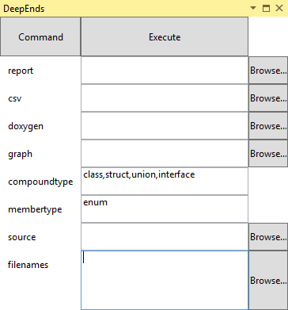
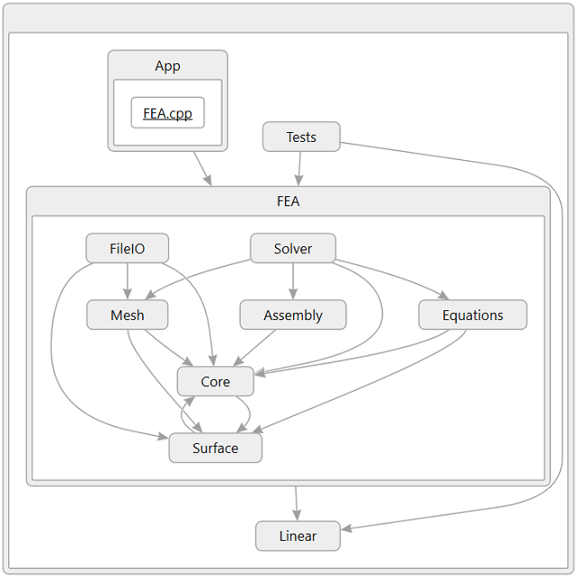
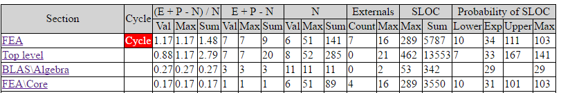
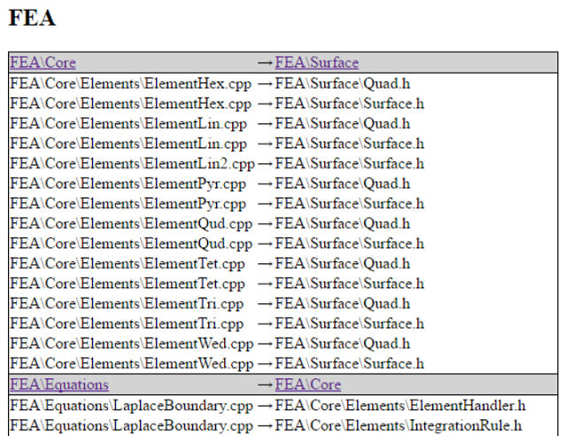

This was originally written as an article for CodeProject.
Visual Studio Enterprise 2015 includes a number of architecture tools whose results can be visualized within the Community and Professional editions. Of particular interest is the DGML file format for describing directed graphs (used to visualize dependencies) as these files can be viewed in Community. I believe the DGML viewer uses the Microsoft Automatic Graph Layout library to do the actual drawing, thus it should be possible to create a standalone viewer.
The source code for the plug-in is available on GitHub for those wishing to see example code for parsing C# and Visual Basic source in Roslyn, decompiling assemblies with Mono.Cecil or using the Visual Studio API to create DGML files.
DeepEnds allows you to dive into your architecture without having to dive deeply into your pocket... i.e. It has been developed for Visual Studio Community 2015 and is distributed gratis. It uses the same concepts for visualizing dependencies and calculating associated metrics as described in "As-Is Software Architecture" and "Why Favour the Cyclomatic Number?", so they won't be repeated here.
To launch the tool from the menu bar choose View → Other Windows → DeepEnds; the tool window is very simple. At the top left is the Command button which, once pressed, displays the batch file command that is effectively run when the Execute button next to it is pressed. In the final column there are a series of Browse button for selecting files and directories to read and write. Each row has a tooltip associated with it so it can be hovered over for an explanation.

There are some limitations on the input: Cannot mix Visual C++, .NET and Doxygen XML. The decompilation of .NET assemblies will not produce as good a result as parsing the C# or VB source code.
As mentioned, the main form of output is a DGML file (specified on the row labelled graph) which happens to be a collapsible hierarchical graph format which supports hyperlinks to code as can be seen by the underlining of the text of the leaf node (FEA.cpp) in the following diagram. The hierarchy is defined by the namespace for .NET and by the filter for Visual C++. Note that it is possible for the user to edit this diagram interactively.

The second form of output are the tables - mainly an HTML report (specified on the row labelled report), although the main table can be output as a CSV file (row labelled csv) or as Doxygen comments (row labelled doxygen). For example, from a HTML report,

This starts with the label of the graph nodes followed by whether a cycle exists in the graph. Then a table of complexities ordered so that the worst is first. The sum columns refer to the formula to their left that is evaluated for the current and all child nodes, recursively. Thus it is possible to get one value for the project and to track that over the course of development.
The externals column refers to the number of unique dependencies that aren't contained by the current node. Thus the Top Level node will always have a value of zero. The maximum on the node and all its children is tracked for completeness. This measure is equivalent to Class Coupling in Microsoft Code Metrics.
For instances other than decompiled code, the number of lines of code in a leaf node are counted. Thus comments (but not C style comments) are ignored along with braces in C++ and C#. The sum and maximum calculated over the current and child nodes are reported. Next the results of fitting a log-normal probability distribution to the lines of code in a leaf are reported where applicable, otherwise a blank is left.
This table hyperlinks to sections that detail the underlying dependencies that cause the links to be displayed in the graph. For example, FEA\Core should not be dependent on anything so it is useful to see what is creating the circular dependency (so that it can be broken) by looking at the appropriate section.

There are further tables of the external dependencies, the individual SLOC and the structure matrix.
Additionally, there is a console application called DeepEnds.Console.exe. Run it with no arguments to get usage instructions. Note that extensions (*.vsix) are just an archive if you cannot find where Visual Studio has installed the extension.
So, if interested, please download and install. It should work for Visual Studio Professional 2015 as well as for Community.